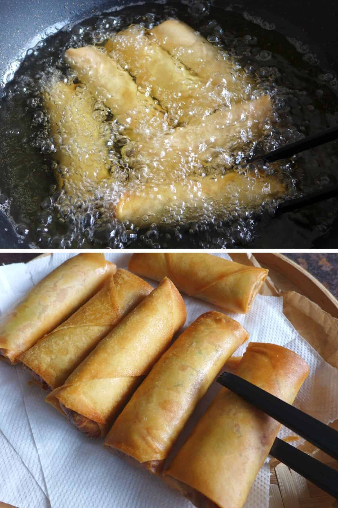

Chinese Spring Rolls

Description
A tried and tested recipe for Chinese spring rolls. You dont need to precook the filling. Two frying methods are provided.
Ingredients
For the wrappers
- 15 large flour-based spring roll wrappers - 25*25cm (10*10 inches)
Note: Ready-made spring roll wrappers usually come frozen. Defrost in the fridge the night before.
For the filling
- 200 g minced pork (or chicken/beef) - 7oz
- 120 g shrimp, shelled and cubed - 4oz
- 120 g carrot, grated - about 2 cups
- 130 g bean sprouts - about 2 cups
- 100 g Chinese chives, cut into sections (or finely shredded cabbage) - about 2 cups
- 6 shiitake mushrooms, thinly sliced - rehydrate beforehand if using dried ones
- 2 stalks scallions, finely chopped
- 100 g dried mung bean vermicelli, rehydrated and cut into sections - about 2 cups after soaking
- 2 eggs
For the seasoning
- 2 tablespoon oyster sauce
- 1 teaspoon sesame oil
- ½ teaspoon salt
- ½ teaspoon sugar
- ¼ teaspoon ground white or black pepper
For frying
- Cooking oil for deep frying or air-frying
For the dipping sauce (optional)
- 2 tablespoon white rice vinegar (or fresh lemon/lime juice)
- 1 teaspoon light soy sauce
- 1 pinch sugar
- 1 clove garlic, minced
- Fresh chili pepper, finely chopped - to taste
Steps
Mix the filling
- Put all the ingredients for the filling into a large mixing bowl (NB: leave out one egg yolk for brushing the wrappers).
- Add all the seasonings.
- Mix until well combined (Its best to do so with your hands. Wear kitchen gloves if available).
Assemble the rolls
- Gently separate the spring roll wrappers one by one. Remember to always cover them with a clean damp cloth as they dry out easily.
- Place one wrapper on a flat surface with one of the four corners facing towards you. Put about 3 tablespoon of the filling above the closest corner (Use a spoon to help shape it into a rectangle).
- Lift the closest corner to wrap the filling then roll it to the half-line of the wrapper. Try to wrap it as tight as possible without leaving any air pockets inside. But be gentle during this process to avoid tearing.
- Lightly press two ends of the filling then fold the left and right corners of the wrapper towards the middle.
- Roll the cylinder until only a triangle is left at the top.
- Brush a layer of egg yolk over the triangle.
- Roll again to seal completely.
- Repeat to assemble all the rolls.
Option 1: Deep fry the rolls
- Heat the oil for deep frying until it reaches 180°C/350°F.
- Gently slide in the rolls one by one (Do not overcrowd. Fry them in batches if necessary).
- Fry over medium heat.
- Flip over a few times to ensure even browning.
- When they become golden, transfer out to a tray lined with kitchen paper to absorb excess oil.
Option 2: Air fry the rolls
- Preheat the air fryer at 200°C/390°F for 3 minutes. While waiting, brush a layer of oil all around the spring rolls.
- Put the rolls over the crisper tray of the air fryer in a single layer. Leave to cook for 8-10 minutes. Then flip over and cook for a further 5 minutes until they become golden.
Additional Information
Serve and reheat
- Serve warm on their own or with the dipping sauce.
- To reheat leftover spring rolls, put them in a preheated oven at 200°C/390°F for about 5 minutes, or in an air-fryer at 200°C/390°F for 3 minutes or so.
Make ahead
- You may store uncooked spring rolls, right after they’re assembled, in the freezer for up to three months (Keep them in an air-tight bag/container).
- Cook as usual without defrosting.
- If deep frying, raise the temperature to 190°C/375°F.
- If air-frying, prolong the cooking time by 3-5 minutes.
Return to Main Page